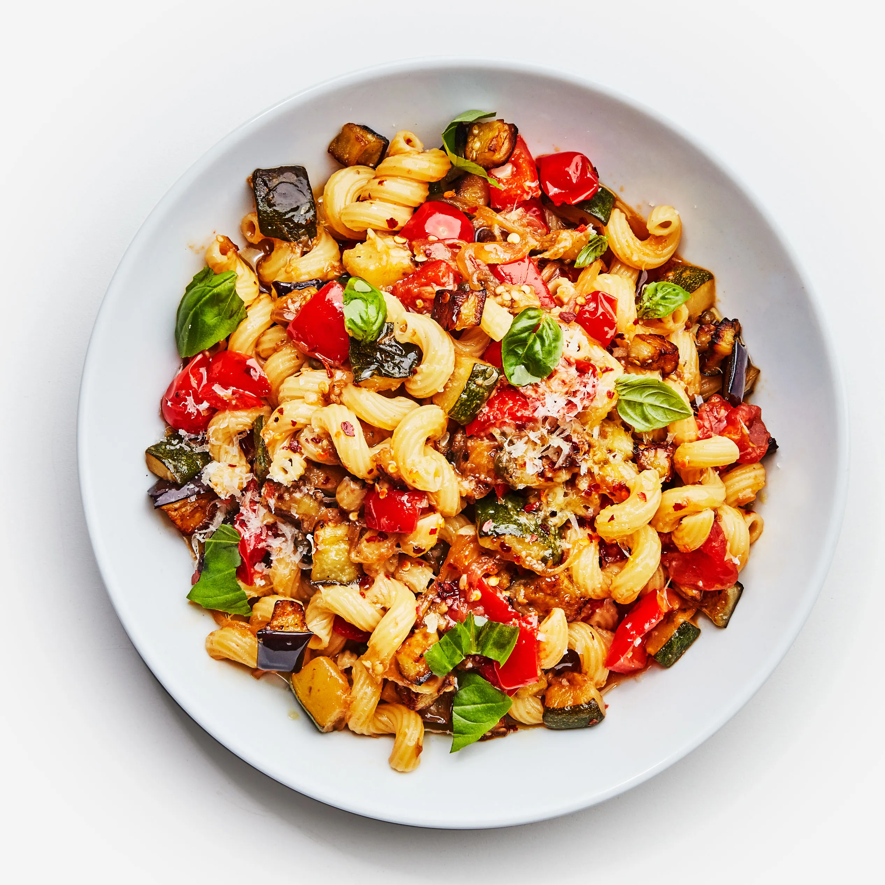

Eggplant Ratatouille Pasta

Pasta dish, but no rat
INGREDIENTS
- Roma, plum, or large garden tomatoes
- Eggplant
- Yellow or green zucchini
- Fresh garlic cloves and powder
- Fresh basil
- Pasta noodles of choice
PREPERATION
- Saute cubed eggplant in a large pot with a pinch of salt in oil until soft (about 5-7 minutes).
- Then transfer cooked eggplant into a bowl.
- In the same pot as the eggplant, add a little more oil, and saute zucchini with a pinch of salt until soft (about 5 minutes).
- Remove cooked zucchini from the pot and add to the same bowl as eggplant.
- Using the same pot as the zucchini, add onions and garlic and saute for 3 minutes.
- Then add diced tomatoes and cook for about 10 minutes.
- When tomatoes have cooked down a little, add the zucchini and eggplant, garlic powder, and a generous pinch of salt.
- Let the vegetables cook on a LOW to a MEDIUM simmer for about 30-40 minutes until the stew thickens, stirring often.
- When the stew is finished, taste, and adjust with additional salt & black pepper. Stir in chopped fresh basil and serve with pasta noodles!